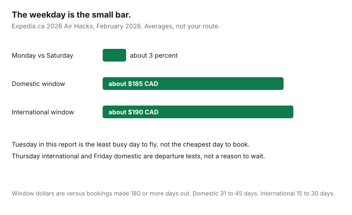

Travel · Canada
The Cheap-Flight Day Myth for Canadians: What to Do Instead of Waiting for Tuesday
The advice is still in group chats: wait until Tuesday, clear your cookies, and the fare will drop. Households that follow it miss the dip that was on the screen on Wednesday, then buy on the following Tuesday after the seat has gone. The weekday is a weak average. The window before departure, the dates you can actually fly, and a price you wrote down are the decision.
The Canada-origin numbers below are Expedia’s 2026 Air Hacks, published in February 2026 and used across our booking guides. They are averages, not a quote for your route. Other researchers have published other “best days.” That conflict is the point of the first section. Education only. This page does not rank booking sites.
Disclosure: Flight-search sites and fare-alert tools are an offer type. Saving Optimizer may earn a commission if we later add partner links. We do not claim an airline or booking-site partnership. Fare rules were read from the sources dated below and from our Air Canada fare-brand guide. Education only.
Key takeaways
- In Expedia’s February 2026 Canada report, Tuesday is the least busy day to fly, not the cheapest day to book. Monday was the cheapest booking day overall, by about 3 percent versus Saturday.
- A 3 percent weekday gap is smaller than booking in the wrong window. Domestic economy in that dataset was about $185 CAD less at 31–45 days than at 180+ days. International economy was about $190 less at 15–30 days.
- Replace the myth with an alert, a flexible-date grid, and a ceiling that includes the bag.
- Departure day is a second test: Thursday for international and Friday for domestic, in that same report. Do not move a fixed week off to chase it.
- The household routine is track, threshold, book, then a 24-hour rethink before the hotel deposit. Incognito mode is not a step in that routine.
Why single “best day to book” claims conflict across studies
A single “best day to book” has to be false as soon as two serious datasets disagree, and they do, across years and across sellers. One year’s study crowns Tuesday. Another crowns Sunday. Expedia’s February 2026 release for Canadians, which is the dataset this site uses because it separates Canada-origin trips, says something more specific and still modest:
- Cheapest day to book overall: Monday. Saturday was the most expensive. The published gap is about 3 percent.
- Canadian domestic booking day: Sunday cheapest, Wednesday most expensive, about 5 percent.
- Business class booking day, in the same release: Friday cheapest, Tuesday most expensive, about 4 percent.
- Tuesday’s role in that release is crowds, not price. Tuesday is the least busy day to fly. Friday is the busiest.
Three to five percent on a $500 fare is $15 to $25. The booking window in the same report is a different scale: about $185 CAD on domestic economy for booking 31–45 days out instead of 180 or more days out, and about $190 on international economy for 15–30 days out. Waiting a week for Tuesday, while a fare inside the window disappears, can cost more than the entire weekday effect. Treat any new study that names a day as a hypothesis you may test on a flexible grid, not as a calendar hold.

Replace myths with alert-driven dips and flexible date grids
The booking-window guide is the method. Short version, so this page can stand on the weekday question:
- Set the alert at three to five months out, on the dates you can fly, not on a wishful week.
- For an ordinary domestic economy trip, expect the useful prices in the 31–45 day band. For an ordinary international economy trip, 15–30 days, with 31–45 days still better than six months out in that dataset.
- Open a ±3 day grid from the home airport. A Thursday that saves the fare and costs two vacation days is not a save. Count the days off.
- Buy a dip inside the window when it is at or under your ceiling. The first alert email is not an instruction to purchase.
Peaks do not obey the average. March break, Christmas, and a long weekend can empty the cheap buckets earlier. If the dates are fixed by a school board, use the March break guide and shop when the schedule opens. If the trip is under about 800 kilometres, price the train and the car before you price a third airport. The short-haul comparison is the door-to-door guide.
Departure day effects (e.g., Thursday international) as a secondary lever
Departure day is the lever people confuse with booking day. Expedia’s 2026 Canada figures, in the same February release:
- International: Thursday was the cheapest day to fly, up to about 8 percent versus Saturday.
- Domestic: Friday was the cheapest day to fly, up to about 7 percent versus Monday.
Use that as a test on the grid, after the trip length is legal for your leave. A household that can fly Thursday and return the following Tuesday should look at that pattern once. A household that can fly only on the Saturday of a long weekend should not pretend Thursday exists. The average will not move a wedding or a custody week.
Crowds are a separate goal. If the aim is a calmer airport rather than a lower fare, Tuesday is the interesting day in this dataset, and January is the least busy month. That is a comfort choice. Price it. Do not assume the quiet day is the cheap day. In this release, it is not the booking rule, and it is not the cheapest departure day either.
Error fares and flash sales—rules for when to jump
A flash sale and an error fare are not the same event. A sale is a filed discount the airline or the package seller intends to honour. An error fare is a price that looks like a mistake: a decimal in the wrong place, a fare basis that should not have been public. Airlines can cancel tickets they say were mistaken. A blog that tells you to “jump and sort it later” is volunteering your hotel deposit.
Rules before you pay:
- The all-in price, with the bag you will actually check or carry, is at or under the ceiling on your sheet. A fare that only works if you travel with a personal item, on a Basic or UltraBasic brand, has to be re-priced with the bag. Use the bag-fee guide.
- You can pay the seller directly, and you know whether a refund in the first day runs through the airline or back through an agency.
- You do not buy the non-refundable room, the resort package, or the train connection until the ticket survives the rethink window.
- If the price is absurd relative to every other flight that day, treat it as unstable. Have a replacement plan that you can afford if the airline voids it.
Air Canada’s customer service plan, as used in our Basic versus Standard guide, lets you cancel a ticket Air Canada sold, including many non-refundable fares, within 24 hours of purchase for a full refund. Tickets bought through an agency follow the agency’s channel. That window is the rethink. It is not a promise that every seller on the internet offers the same day.
Incognito myths and cookie stories that waste time
The cookie story says the airline sees you looking and raises the fare, and that a private window resets the price. Fares sold in Canada are filed and distributed. A refresh in incognito does not create a new fare bucket. Two people in the same house can see different prices because one of them is looking at a different time, a different brand of ticket, or a seat that just sold. That is inventory. It is not a punishment for using Chrome while logged in.
What is worth ten minutes: the same dates on the airline and on one other seller, bag rules read in both checkouts, and the price converted to the all-in CAD number. What is not worth the evening: clearing cookies, switching VPNs, and waiting for Tuesday because a forum said the algorithm blinks. If a site is showing you a CAD total for a foreign fare, also read the dynamic currency conversion guide before you treat that total as the airline’s price.
Household SOP: track → threshold → book → calendar the 24-hour rethink
Put this on one card in the notes app. Do it in order.
| Step | What “done” looks like |
|---|---|
| Track | An alert on the real dates, started 3–5 months out, plus a ±3 day grid. One note of the bag you must take. |
| Threshold | A ceiling in Canadian dollars, all-in. If you do not know the number, you are not ready to see a sale. |
| Book | Any day the price is at or under the ceiling, inside the window you can live with. Not “next Tuesday.” |
| 24-hour rethink | A calendar item the hour you book. Cancel inside the seller’s window if the fare was a mistake or the leave was refused. Only then pay for lodging you cannot undo. |
If the leave is refused, the routine worked. You still have the refund window. If you booked the resort on the same night because the fare felt lucky, the routine did not run. The fare was never the whole trip.
Sources & date stamps
- Expedia.ca 2026 Air Hacks, updated February 2026, and the Expedia Group release the same month — Monday versus Saturday about 3 percent to book; Sunday versus Wednesday about 5 percent on Canadian domestic; Friday versus Tuesday about 4 percent on business class; Thursday international departure up to about 8 percent versus Saturday; Friday domestic departure up to about 7 percent versus Monday; Tuesday least busy day to fly; domestic 31–45 days and about $185 CAD versus 180+ days; international 15–30 days and about $190. Used 24 Sep 2026.
- Air Canada 24-hour cancel-for-refund on tickets it sells — as stated in our Basic versus Standard guide, read from Air Canada’s customer service plan. Re-read the plan the week you book. Agency tickets differ.
- This page does not adopt a single academic “best day.” Disagreement across studies is the reason the weekday is not the strategy.
Frequently asked questions
Is Tuesday the cheapest day to book a flight from Canada?
Not in Expedia’s February 2026 Canada report. Tuesday is described as the least busy day to fly. The cheapest day to book, in that dataset, was Monday overall, about 3 percent cheaper than Saturday, and Sunday for Canadian domestic, about 5 percent cheaper than Wednesday. A different study in a different year has named other weekdays. The gap is small next to booking at the wrong time.
What should we do instead of waiting for a cheap weekday?
Set a fare alert three to five months out, watch a plus-or-minus three day grid, and buy when the all-in price, including bags, hits a ceiling you wrote down. In Expedia’s 2026 Canada data the useful window was 31 to 45 days for domestic economy and 15 to 30 days for international economy.
Does the day we fly matter at all?
It is a secondary test, not the strategy. Expedia’s 2026 Canada figures put Thursday as the cheapest international departure day, up to about 8 percent versus Saturday, and Friday as the cheapest domestic departure day, up to about 7 percent versus Monday. If your week off cannot move, ignore the average.
Should we book an error fare the moment we see one?
Only inside a ceiling, from a seller you can pay, and only if you can undo hotels when the ticket does not stick. Airlines can cancel a fare that was a mistake. Use a 24-hour refund where the seller offers one, including Air Canada’s rule on tickets it sells, before you pay for lodging you cannot cancel.
Does incognito mode find cheaper fares?
Not as a strategy. Filed fares do not reload because you opened a private window. Compare two sellers if you want a check. Then go back to the alert. An evening of cookie theories is how a real dip expires.